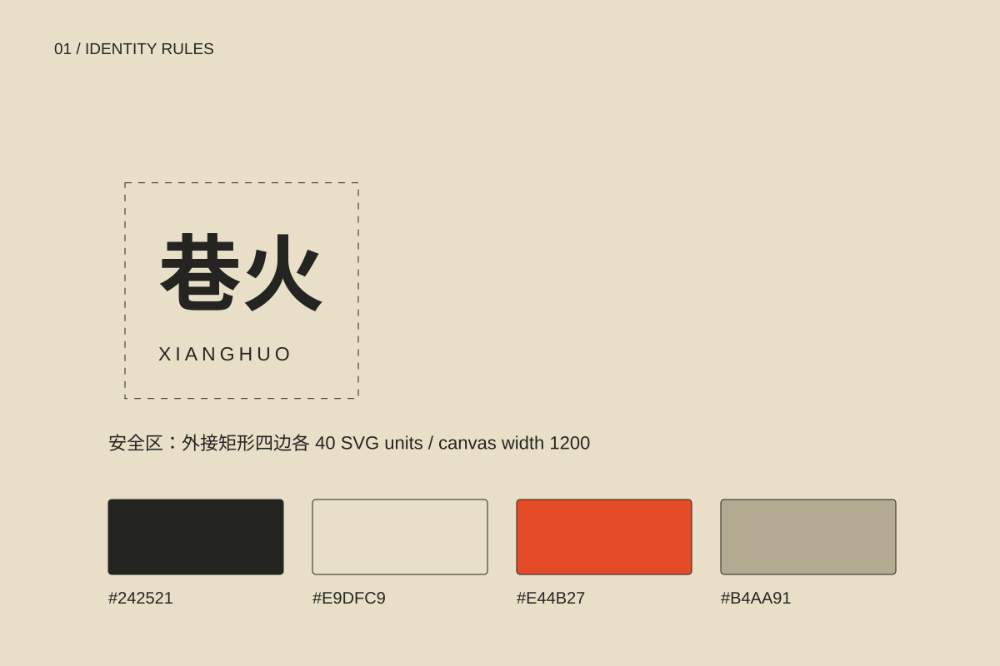
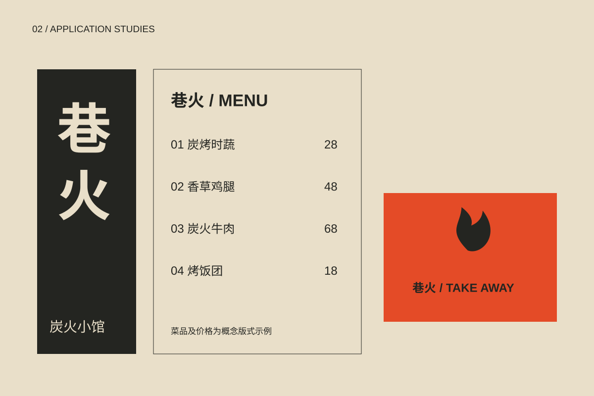
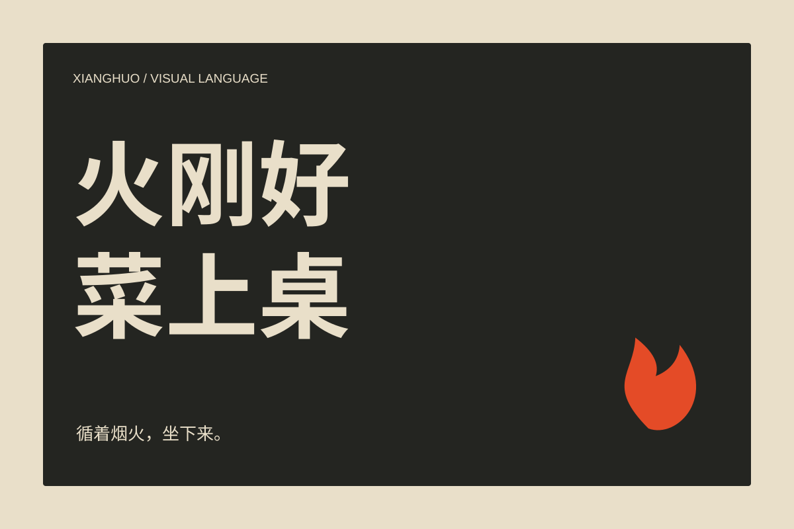

02 / Neighborhood charcoal kitchen
巷火
用窄巷的纵向节奏，把炭火小馆从街头延伸到餐桌。

01 / THE BRIEF
从问题到规则。
餐饮品牌需要同时应对远距离店招、近距离菜单和外带包装。方案以竖向字标、窄条网格和火色强调建立三个尺度下的识别。
火形只保留一处，更多识别来自竖向节奏，避免让所有物料都变成火焰图案。
本项目为自主概念设计，产品、菜单、价格与空间均为设计设定；尚未进行商标检索、打样或门店落地。
02 / CORE IDENTITY
识别的骨架。

RULE / 01纵向组合为店招主标，横向组合用于窄版菜单；留白至少等于火形符号宽度的二分之一。
RULE / 02炭黑与纸色为基础，火橙只作重点；长段正文使用炭黑，不以细小橙字承载价格与食材。
RULE / 03中文粗黑体负责标题，等宽数字负责菜品编号与价格。避免使用过多仿旧字体影响阅读。
RULE / 04以四条竖向“巷道”组织画面。肌理限于大面积背景，食材、价格和过敏原区域保持干净。
03 / COLOUR & TYPE
让变化保持一致。
#242521
#E9DFC9
#E44B27
#B4AA91
中文 Aa / 0123456789
主标题 64–120 px，章节标题 32–48 px，正文 16–18 px，注释至少 12 px。正文行高 1.7–1.85；移动端保持阅读顺序与文字对比。
语气与文案
直接、亲切、有烟火气。示例：“火刚好，菜上桌。”菜单描述优先说明食材与做法。
网页使用设备自带字体，不分发字体文件。当前字标为字体排印提案；正式矢量字形定制、字体授权及印刷色样需在生产前完成。
04 / IN CONTEXT
从主视觉走到日常。

TOUCHPOINT / 01门头：纵向灯箱与横向店名组合；夜间示意属于平面环境样机，非已建成空间。
TOUCHPOINT / 02菜单：按炭烤、时蔬、主食分区，菜品编号与价格右对齐；保留食材和过敏原说明区。
TOUCHPOINT / 03外卖盒、围裙与桌卡：采用单色标志和窄条信息带，延续巷道网格。
应用均为原创矢量示意，非实物摄影或已落地项目证明。
05 / VISUAL LANGUAGE
一句话，一个画面。

06 / IMPLEMENTATION
规范也包括边界。
使用检查
不拉伸标志比例；不添加阴影和描边；不在复杂背景上直接压小字；不以颜色作为唯一信息编码；保留名称与必要说明的安全区。
交付与下一步
本轮交付网页案例、4张可编辑SVG展示板与可打印的规范页面。生产前还需校验最小尺寸、字形与商标、CMYK打样、真实包装刀模与实际服务信息。

07 / CONTEXT & CREDITS
来源与创作说明。
品牌定位、图形与应用由本次项目自主构思。
研究参考：Pentagram / Parla（品牌触点的一致性）、Pentagram / Bacàn（文字节奏与空间识别）、BUCK / Headspace（形状叙事）。仅研究方法，不使用对方图片、字体、标志或图形资产。
本次新增文案、SVG图形与网页由 AI 辅助构思和制作，供鼎翊作品集探索与后续深化。真实项目原有创作者与权利归属保持不变；本页不宣称任何商业或医疗效果。